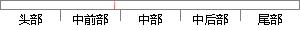

当用户预备开始录音时，MMAPI以一种格式打开波形输入设备，发送设备开启消息给回调函数并准备缓冲区，将缓冲区添加到设备，告诉录音设备开始录音。
片段位置图

相似结果|
相似片段 1：开启成功后，函数会发送一个Ⅲ一WIM—OPEN消息给phwi参数指向的窗口，由这个窗口负责对消息的响应。响应的操作可以是准备缓冲区，把缓冲区送入设备，命令设备开始录音等。消息包含打开的设备的句柄
|
※ 片段修改建议 ※
近似词参考：- 预备：豫备 准备
- 开始：起头 入手下手 最先
- 录音：灌音
- 格式：格局 花式 花样 款式
- 设备：装备 设置装备摆设
- 设备：装备 设置装备摆设
- 消息：动静 新闻 音讯
- 准备：筹办 预备 筹备
- 设备：装备 设置装备摆设
- 告诉：告知 报告 奉告
- 录音：灌音
- 设备：装备 设置装备摆设
- 开始：起头 入手下手 最先
- 录音：灌音
系统自动生成语句：当用户豫备起头灌音时，MMAPI以一种格局打开波形输入装备，发送装备开启动静给回调函数并筹办缓冲区，将缓冲区添加到装备，告知灌音装备起头灌音。
注：本片段修改建议为系统自动生成，仅供参考。